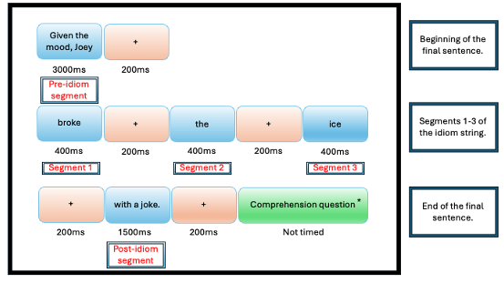
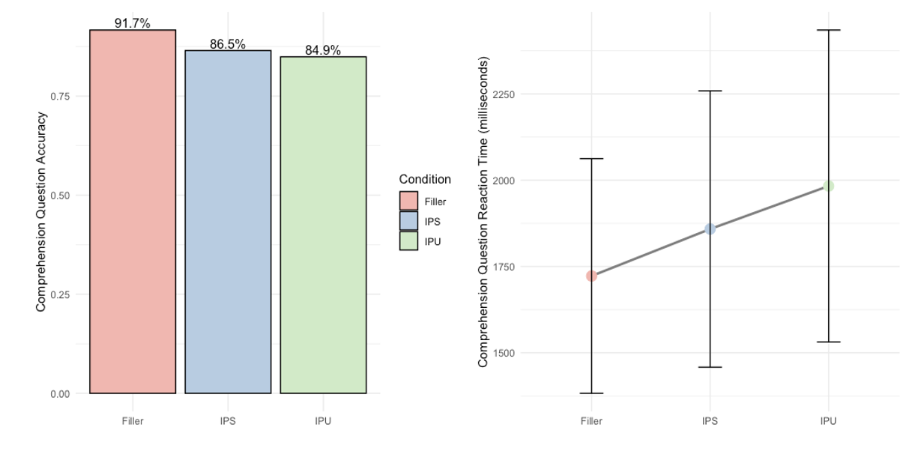
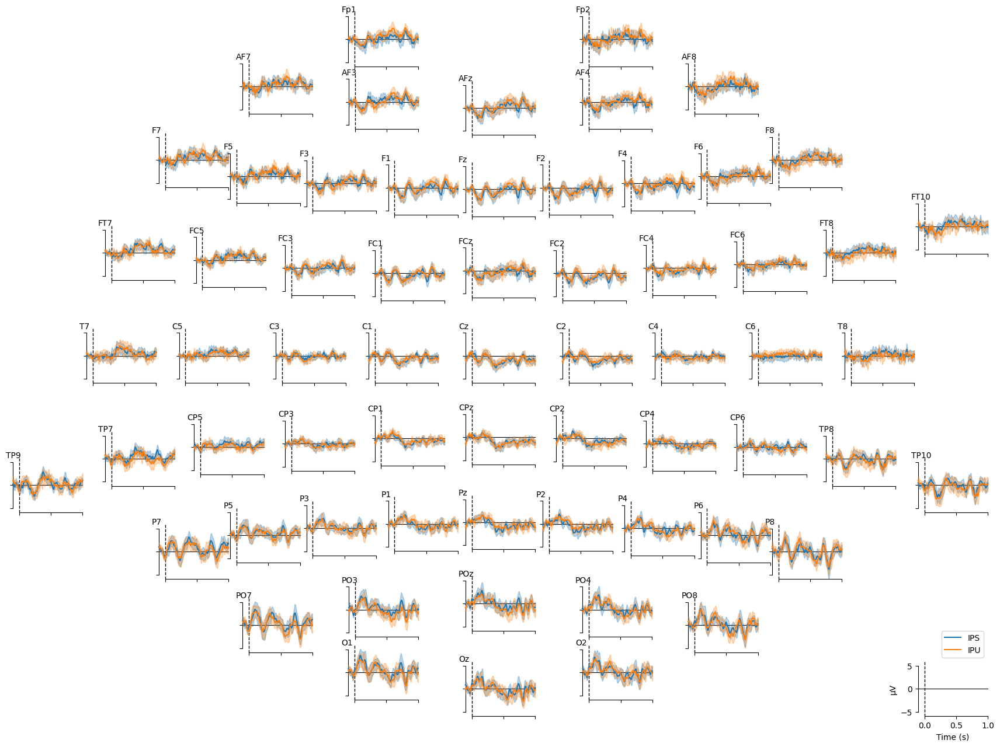
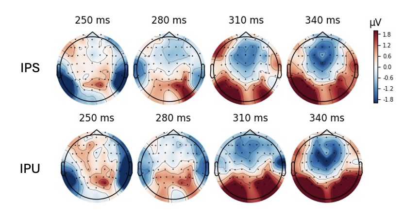

1. Experimental Paradigm
To test this theory an experimental paradigm was designed. In this paradigm, each of the three individual words which composed our idioms were presented for 400ms and were followed by a 200ms fixation cross. Following the final 200ms fixation cross, which came after the final word of the idiom, the last segment was then presented to our participants. For half of the trials a True/False comprehension question was posed to participants. Each trial would then come to an end with a blank white screen for 2000ms.

2. Behavioral Analysis
It was found that when the hidden rules of idioms are violated, they're processed slower and comprehension becomes worse. This behavioral cost was the initial sign that the brain expects specific contextual prerequisites alongside idioms.

3. Decoding Brainwaves (EEG)
EEG allows us to look inside the brain by capturing the electrical signals generated by neurons. This experiment utilized a high-density 64-electrode montage to map activity across the entire scalp.
What's important to note about this analysis is that it utilizes a technique which groups the neural data of all participants. In addition, it investigates peak amplitudes or the neural feedback recorded during precise time segments where each idiomatic string is presented to the participants as indicated in the experimental procedure.

4. Peaking Inside The Brain
Just a quarter of a second after seeing the first word of the idiom, a P3b component was detected. This can be interpreted as the brain's internal alarm bell flagging contextual violations.

In our statistical analysis we investigated the effect of condition on the peak amplitude during the P3b window. The results reveal that there is a larger P3b effect when an idiom's presupposed information is not accommodated, as opposed to when it is.
5. The Bayesian Model
A Bayesian linear mixed effects model was used for this analysis. In particilar, four Markov chains, each with 2000 iterations, including 1000 warm-up (burn-in) iterations, resulting in 4000 post-warmup samples were used for inference. A random effects structure was adopted for modeling, to assign random intercepts for each participant.
The model indicated that there was a significant difference between how the brain treated the two experimental conditions. There was a larger amplitude in the condition where an idiom's presupposed information is not accommodated compared to the condition where it is, reflecting the brain's immediate response to the missing contextual prerequisite.
This is an abridged version of a peer-reviewed study; Open-Source Code available here.
By utilizing well-established techniques in cognitive neuroscience (EEG), this study provides evidence for a novel hypothesis: Certain aspects of language (e.g., idioms) not only express conventionalized meanings but come with deeply engrained assumputions that determine their use. What is shown here is that the brain never stops predicting what's coming next in conversation, even when we're entirely unaware of this process. From a methodological perspective, this work speaks to the great utility that Bayesian modeling provides, particularly when it is necessary to compare how different factors affect a singular outcome.